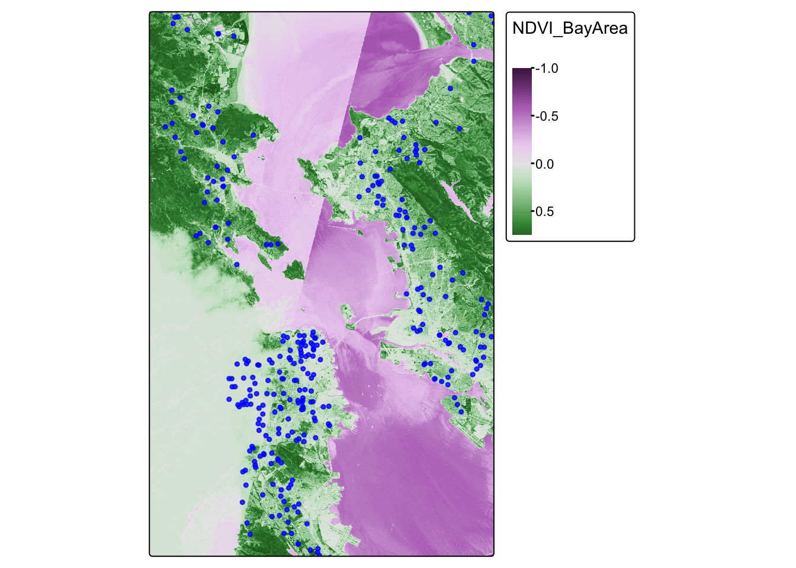
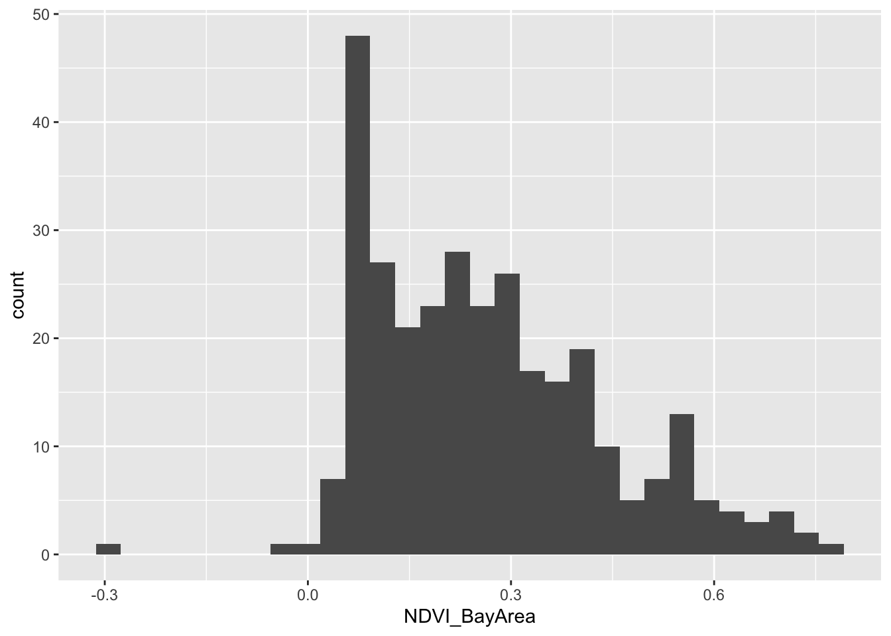

In this lab, we are going to work with vector and raster data, spatially joining point data to vector data
The objectives of this guide are to teach you:
Enough talk–let’s get coding!
First, let’s install our packages.
library(sf)## Linking to GEOS 3.13.0, GDAL 3.8.5, PROJ 9.5.1; sf_use_s2() is TRUElibrary(MapGAM)## Loading required package: sp## Loading required package: gam## Loading required package: splines## Loading required package: foreach## Loaded gam 1.22-5## Loading required package: survivallibrary(tidyverse)## ── Attaching core tidyverse packages ──────────────────────── tidyverse 2.0.0 ──
## ✔ dplyr 1.1.4 ✔ readr 2.1.5
## ✔ forcats 1.0.0 ✔ stringr 1.5.1
## ✔ ggplot2 3.5.2 ✔ tibble 3.2.1
## ✔ lubridate 1.9.4 ✔ tidyr 1.3.1
## ✔ purrr 1.0.4## ── Conflicts ────────────────────────────────────────── tidyverse_conflicts() ──
## ✖ purrr::accumulate() masks foreach::accumulate()
## ✖ dplyr::filter() masks stats::filter()
## ✖ dplyr::lag() masks stats::lag()
## ✖ purrr::when() masks foreach::when()
## ℹ Use the conflicted package (<http://conflicted.r-lib.org/>) to force all conflicts to become errorslibrary(flextable)##
## Attaching package: 'flextable'
##
## The following object is masked from 'package:purrr':
##
## composelibrary(RColorBrewer)
library(tmap)
library(terra)## terra 1.8.29
##
## Attaching package: 'terra'
##
## The following objects are masked from 'package:flextable':
##
## align, colorize, rotate, width
##
## The following object is masked from 'package:tidyr':
##
## extract
We will be using data included in the MapGAM package. As a reminder: While they are based on real patterns expected in observational epidemiologic studies, these data have been simulated and are for teaching purposes only. The data contain 5000 simulated ovarian cancer cases. While this is a cohort with time to mortality, for the purposes of our class, we will conduct simple tabular analyses looking at associations between different spatial exposures with mortality at end of follow-up.
As another reminder, the CAdata dataset contains the following variables:
Next, we want to read in all of our spatial data. First, we read in the CAdata dataset from the MapGAM package, and then convert it to a spatial dataset.
data(CAdata)
ca_pts <- CAdata
ca_proj <- "+proj=lcc +lat_1=40 +lat_2=41.66666666666666
+lat_0=39.33333333333334 +lon_0=-122 +x_0=2000000
+y_0=500000.0000000002 +ellps=GRS80
+datum=NAD83 +units=m +no_defs"
ca_pts <- st_as_sf(CAdata, coords=c("X","Y"), crs=ca_proj)
We then read in the raster for greenspace data across the Bay Area. Finally, we check the file to make sure it was read correctly. Does it have a coordinate reference system?
url <- "https://github.com/pjames-ucdavis/SPH215/raw/main/NDVI_rast2.tif"
download.file(url, destfile = "NDVI_rast2.tif", mode = "wb")
ndvi_rast = rast("NDVI_rast2.tif")
ndvi_rast## class : SpatRaster
## dimensions : 1856, 1485, 1 (nrow, ncol, nlyr)
## resolution : 0.0002694946, 0.0002694946 (x, y)
## extent : -122.6001, -122.1999, 37.59988, 38.10007 (xmin, xmax, ymin, ymax)
## coord. ref. : lon/lat WGS 84 (EPSG:4326)
## source : NDVI_rast2.tif
## name : NDVI_BayArea
## min value : -1.0000000
## max value : 0.8533574
Finally, we check the projections. This is the most important
step and is guaranteed to make life easier with your geospatial
analysis! When you have files in different projections, this
can be a major problem because when we try to overlay the two files they
may not overlap. First we check the coordinate reference systems for
each dataset using st_crs(). We then use the
st_transform() function to convert the projection for our
point data to match that of our polygon data. When we are done, do the
projections of the two datasets match?
## Look at the coordinate reference system for the cancer data, and for greenspace data
st_crs(ca_pts)## Coordinate Reference System:
## User input: +proj=lcc +lat_1=40 +lat_2=41.66666666666666
## +lat_0=39.33333333333334 +lon_0=-122 +x_0=2000000
## +y_0=500000.0000000002 +ellps=GRS80
## +datum=NAD83 +units=m +no_defs
## wkt:
## PROJCRS["unknown",
## BASEGEOGCRS["unknown",
## DATUM["North American Datum 1983",
## ELLIPSOID["GRS 1980",6378137,298.257222101,
## LENGTHUNIT["metre",1]],
## ID["EPSG",6269]],
## PRIMEM["Greenwich",0,
## ANGLEUNIT["degree",0.0174532925199433],
## ID["EPSG",8901]]],
## CONVERSION["unknown",
## METHOD["Lambert Conic Conformal (2SP)",
## ID["EPSG",9802]],
## PARAMETER["Latitude of false origin",39.3333333333333,
## ANGLEUNIT["degree",0.0174532925199433],
## ID["EPSG",8821]],
## PARAMETER["Longitude of false origin",-122,
## ANGLEUNIT["degree",0.0174532925199433],
## ID["EPSG",8822]],
## PARAMETER["Latitude of 1st standard parallel",40,
## ANGLEUNIT["degree",0.0174532925199433],
## ID["EPSG",8823]],
## PARAMETER["Latitude of 2nd standard parallel",41.6666666666667,
## ANGLEUNIT["degree",0.0174532925199433],
## ID["EPSG",8824]],
## PARAMETER["Easting at false origin",2000000,
## LENGTHUNIT["metre",1],
## ID["EPSG",8826]],
## PARAMETER["Northing at false origin",500000,
## LENGTHUNIT["metre",1],
## ID["EPSG",8827]]],
## CS[Cartesian,2],
## AXIS["(E)",east,
## ORDER[1],
## LENGTHUNIT["metre",1,
## ID["EPSG",9001]]],
## AXIS["(N)",north,
## ORDER[2],
## LENGTHUNIT["metre",1,
## ID["EPSG",9001]]]]st_crs(ndvi_rast)## Coordinate Reference System:
## User input: WGS 84
## wkt:
## GEOGCRS["WGS 84",
## ENSEMBLE["World Geodetic System 1984 ensemble",
## MEMBER["World Geodetic System 1984 (Transit)"],
## MEMBER["World Geodetic System 1984 (G730)"],
## MEMBER["World Geodetic System 1984 (G873)"],
## MEMBER["World Geodetic System 1984 (G1150)"],
## MEMBER["World Geodetic System 1984 (G1674)"],
## MEMBER["World Geodetic System 1984 (G1762)"],
## MEMBER["World Geodetic System 1984 (G2139)"],
## MEMBER["World Geodetic System 1984 (G2296)"],
## ELLIPSOID["WGS 84",6378137,298.257223563,
## LENGTHUNIT["metre",1]],
## ENSEMBLEACCURACY[2.0]],
## PRIMEM["Greenwich",0,
## ANGLEUNIT["degree",0.0174532925199433]],
## CS[ellipsoidal,2],
## AXIS["geodetic latitude (Lat)",north,
## ORDER[1],
## ANGLEUNIT["degree",0.0174532925199433]],
## AXIS["geodetic longitude (Lon)",east,
## ORDER[2],
## ANGLEUNIT["degree",0.0174532925199433]],
## USAGE[
## SCOPE["Horizontal component of 3D system."],
## AREA["World."],
## BBOX[-90,-180,90,180]],
## ID["EPSG",4326]]## Transform the coordinate reference system of the cancer data to match that
## of the greenspace data
ca_transformed <-st_transform(ca_pts, st_crs(ndvi_rast))
## Check projections
st_crs(ndvi_rast)==st_crs(ca_transformed)## [1] TRUE
Now, we will visualize our spatial data using tmap. We will overlay the greenspace maps with the ovarian cancer data. Do any patterns jump out, or are there any participants living in the middle of the Bay?
ca.ndvi.map <- tm_shape(ndvi_rast) +
tm_raster(style = "cont") +
tm_shape(ca_transformed) +
tm_dots(size=0.25, alpha=0.8, col="blue")## ## ── tmap v3 code detected ───────────────────────────────────────────────────────## [v3->v4] `tm_raster()`: instead of `style = "cont"`, use col.scale =
## `tm_scale_continuous()`.
## [v3->v4] `tm_dots()`: use 'fill' for the fill color of polygons/symbols
## (instead of 'col'), and 'col' for the outlines (instead of 'border.col').
## [v3->v4] `tm_dots()`: use `fill_alpha` instead of `alpha`.ca.ndvi.map## Variable(s) "col" contains positive and negative values, so midpoint is set to 0. Set midpoint = NA to show the full range of visual values.
We find that the most least green areas are in the downtown areas of San Francisco and Oakland, which makes sense. Our cancer cohort data overlaps with the greenspace map, which is reassuring.
Now that we have visualized our data, let’s see if there is an
association between greenspace exposure and mortality among ovarian
cancer cases. We will first extract the values for greenspace to the
cancer dataset (merge the two datasets based on location of cases and
the greenspace pixel that they are in) using
terra::extract. Then we will check the distribution of
greenspace exposure in our cancer cases. We will use a two-sided
chi-squared test to test our hypothesis of the association between
greenspace exposure and mortality among ovarian cancer cases. What do we
find?
## Spatially join the cancer point data to the walkability polygon data
ndvi_cancer = data.frame(ca_transformed,terra::extract(ndvi_rast, ca_transformed))
glimpse(ndvi_cancer) ## Rows: 5,000
## Columns: 7
## $ time <dbl> 1.2759763, 4.2121775, 0.2074870, 3.5099074, 10.2977017, 4…
## $ event <dbl> 1, 1, 1, 1, 0, 1, 0, 1, 1, 1, 1, 1, 0, 1, 1, 1, 1, 1, 0, …
## $ AGE <int> 67, 56, 67, 69, 75, 59, 62, 39, 68, 72, 78, 79, 46, 77, 6…
## $ INS <fct> Mcr, Mcd, Mng, Mcr, Mng, Mcr, Oth, Uni, Uni, Uni, Mcr, Mn…
## $ geometry <POINT [°]> POINT (-122.3492 38.3025), POINT (-118.0174 34.1437…
## $ ID <dbl> 1, 2, 3, 4, 5, 6, 7, 8, 9, 10, 11, 12, 13, 14, 15, 16, 17…
## $ NDVI_BayArea <dbl> NA, NA, NA, NA, NA, NA, NA, NA, NA, NA, NA, NA, 0.2483448…## Take a look at a summary of the values
summary(ndvi_cancer$NDVI_BayArea)## Min. 1st Qu. Median Mean 3rd Qu. Max. NA's
## -0.311 0.123 0.239 0.267 0.376 0.757 4688
Looks like we have lots of NA values. That is because some of our
participants live outside of the area of our greenspace data. Let’s drop
those missing values using drop_na(), which is slightly
different from how we’ve done this before.
ndvi_cancer_nomiss <- ndvi_cancer %>% drop_na(NDVI_BayArea)
## Take a look at a summary of the values
summary(ndvi_cancer_nomiss$NDVI_BayArea)## Min. 1st Qu. Median Mean 3rd Qu. Max.
## -0.3107 0.1228 0.2385 0.2666 0.3759 0.7572glimpse(ndvi_cancer_nomiss)## Rows: 312
## Columns: 7
## $ time <dbl> 7.0125318, 0.9644371, 15.0007229, 2.9063815, 16.7471545, …
## $ event <dbl> 0, 1, 0, 0, 1, 1, 1, 1, 1, 0, 0, 0, 1, 0, 0, 0, 1, 1, 1, …
## $ AGE <int> 46, 69, 45, 78, 72, 73, 77, 72, 46, 61, 79, 54, 78, 60, 7…
## $ INS <fct> Mcr, Unk, Mcd, Mcr, Mng, Mcr, Mng, Mcr, Oth, Uni, Mcr, Un…
## $ geometry <POINT [°]> POINT (-122.2031 38.09592), POINT (-122.416 37.7678…
## $ ID <dbl> 13, 42, 48, 49, 64, 74, 100, 124, 141, 173, 178, 219, 223…
## $ NDVI_BayArea <dbl> 0.24834478, 0.03120242, 0.21596712, 0.09975440, 0.5120553…
OK, we have a dataset with no missingness. Can we look at the distribution of greenspace exposure among participants?
ndvi_cancer_nomiss %>%
ggplot() +
geom_histogram(mapping = aes(x=NDVI_BayArea)) ## `stat_bin()` using `bins = 30`. Pick better value with `binwidth`.
For the purposes of our analysis, let’s divide up our greenspace data
into quartiles. We will do this using the mutate() function
combined with the ntile() function. Then we will take a
glimpse at our new dataset.
ndvi_cancer_nomiss <- ndvi_cancer_nomiss %>%
mutate(ndvi_quartile = ntile(NDVI_BayArea, 4))
glimpse(ndvi_cancer_nomiss)## Rows: 312
## Columns: 8
## $ time <dbl> 7.0125318, 0.9644371, 15.0007229, 2.9063815, 16.7471545,…
## $ event <dbl> 0, 1, 0, 0, 1, 1, 1, 1, 1, 0, 0, 0, 1, 0, 0, 0, 1, 1, 1,…
## $ AGE <int> 46, 69, 45, 78, 72, 73, 77, 72, 46, 61, 79, 54, 78, 60, …
## $ INS <fct> Mcr, Unk, Mcd, Mcr, Mng, Mcr, Mng, Mcr, Oth, Uni, Mcr, U…
## $ geometry <POINT [°]> POINT (-122.2031 38.09592), POINT (-122.416 37.767…
## $ ID <dbl> 13, 42, 48, 49, 64, 74, 100, 124, 141, 173, 178, 219, 22…
## $ NDVI_BayArea <dbl> 0.24834478, 0.03120242, 0.21596712, 0.09975440, 0.512055…
## $ ndvi_quartile <int> 3, 1, 2, 1, 4, 1, 3, 1, 4, 1, 1, 3, 3, 1, 3, 3, 1, 3, 4,…
OK that looks good. We have created a new variable ndvi_quartile that tells us what quartile of greenspace a participant lives in. Let’s do a two by two table of greenspace quartiles by event, which is whether a participant died over followup.
## Create a contingency table of event by walk_quartile
tab <- table(ndvi_cancer_nomiss$ndvi_quartile, ndvi_cancer_nomiss$event)
tab##
## 0 1
## 1 36 42
## 2 37 41
## 3 32 46
## 4 31 47
Hmmm, that’s interesting, but let’s look at this by percentages instead.
## Convert to percentages by column
tab_col_perc <- prop.table(tab, margin = 2) * 100
round(tab_col_perc, 1)##
## 0 1
## 1 26.5 23.9
## 2 27.2 23.3
## 3 23.5 26.1
## 4 22.8 26.7
Do you think the percentages are different by quartile of greenspace?
We can run a chi-squared test to be sure. This is a statistical test to
see whether there is a difference in the probability of event,
or whether a participant died over follow-up, by the quartiles of
greenspace We do this with the chisq.test() function.
## Chi-squared test
chisq.test(tab)##
## Pearson's Chi-squared test
##
## data: tab
## X-squared = 1.3556, df = 3, p-value = 0.716
OK, how do we interpret this? Our null hypothesis is that there is no association between mortality at end of follow-up and increasing quartile of greenspace. Our alternative hypothesis is that there is an association between mortality at end of follow-up and increasing quartile of greenspace. We use a two-sided chi-squared test with alpha=0.05. Assuming no sources of bias and that the null hypothesis is true, the probability of observing increases in mortality at end of follow-up with increasing quartiles of greenspace as or more extreme as those produced in these data is 0.716. Since p>0.05, we fail to reject the null hypothesis and conclude that greenspace is not associated with mortality at end of follow-up (under the assumptions stated above). In other words, we don’t see a relationship between greenspace exposure and our outcome (dying over followup).